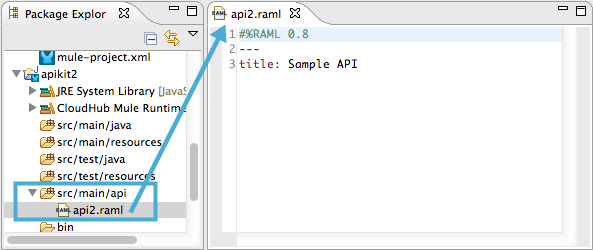
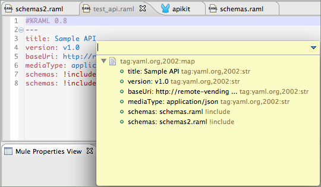
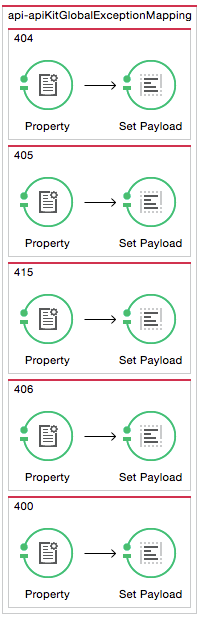
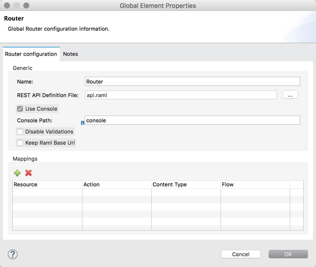
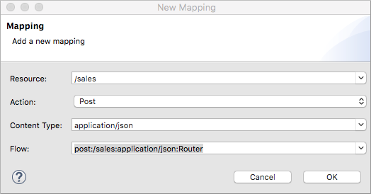
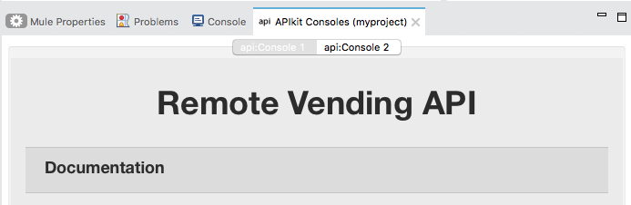

Using APIkit
APIkit 3.8.1 supports RAML 1.0 and 0.8 versions as described in the release notes.
APIkit projects can run on premises or use CloudHub runtimes.
To get started using APIkit in Anypoint Studio, do one of the following:
-
From Project Wizard import a RAML or WSDL definition from one of the following sources:
-
Select the file directly from file system.
-
Log into Anypoint Platform.
-
Refer to the URL in a remote location.
-
-
Create the RAML file within an existing Studio project.
Using this sequence of development is called a backend-first design.
The REST tutorial and SOAP tutorial cover importing an API from the file system to Studio when you create a new project. When you import an API from Anypoint Platform, APIkit includes any RAML dependencies in the Studio project. You can then keep the API in both locations in sync by pushing or pulling changes from one to the other.
APIkit generates the following things when you import or reference a RAML or WSDL that declares a baseURI or namespace, respectively:
-
A main flow with an HTTP Listener
After importation, you can replace the HTTP Listener with a Jetty endpoint.
-
An APIkit Router or SOAP Router, respectively
-
A RAML-based exception strategy mapping or a SOAP fault response template, respectively:
<flow name="api-main">
<http:listener config-ref="api-httpListenerConfig" path="" doc:name="HTTP"/>
<apikit:router config-ref="api-config" doc:name="APIkit Router"/>
<exception-strategy ref="api-apiKitGlobalExceptionMapping" doc:name="Reference Exception Strategy"/>
</flow>Included in the project are backend flows containing REST resource-action mappings or SOAP message templates. APIkit Console is included when you import a RAML, but not a WSDL. You need to use a SOAP testing tool, such as SoapUI. APIkit Console is similar to API Console for simulating calls to the API.
After simulating calls to a RAML-based API using APIkit Console, and improving or changing behavior, you alter the backend flows to act upon real resources with real data.
Configuring the Path for Deployment on CloudHub
CloudHub requires a unique application name regardless of the region where you deploy the API. You can, for example, add the region name to the application name to ensure uniqueness. For example:
test-customers-eu
test-customers-na
By default, APIKit adds a base path to each API, namely /api. Thus, the final URL of the APIs deployed on CloudHub is:
http://test-customers.eu.cloudhub.io/api/customers
http://acceptance-customer.eu.cloudhub.io/api/customers
Running Multiple Versions of the Same API
To run multiple versions of the same API simultaneously, deploy each API implementation using an unique name. For example, add the version number for uniqueness:
test-customer-v1.eu.cloudhub.io
test-customer-v2.eu.cloudhub.io
Thus, the final URL of the APIs deployed on CloudHub is:
http://test-customers-v1.eu.cloudhub.io/api/customers
http://acceptance-customers-v1.eu.cloudhub.io/api/customers
Dropping the environment prefix for production is a MuleSoft best practice. For example:
You can setup desired URLs for each application on CloudHub by using a custom load balancer. For instance, you can configure http://api.yourcompany.com/customer/v1 to point to this URL:
Configuring the Path for Deployment On Premises
By default, APIKit generates a listener having a base path of /api. A different application deployed on the same server will attempt to listen on the same context, for example http://server:port/api/, which causes a conflict.
To avoid such a conflict, configure each Mule application using a different base path. For example:
/api/customers
/api/products
If multiple versions of the same application need to run on the same server, add a version designator to the base path. For example:
/api/customers/v1
/api/customer/v1
Because each server belongs to a different environment, there is no need to include the environment, such as /test or /dev, in the base path.
Avoid hard-coding URLs in base path. Use different property files for different deployments:
You can configure a custom load balancer to adjust URLs. For example, http://api.yourcompany.com/customer/v1 can point to http://server:port/api/customer/v1.
Configuring an HTTP Request
When configuring an HTTP request after deployment, if the API is accessible, not blocked by a policy for example, you can use an HTTP client, such as Postman, to obtain the RAML definition.
-
Set up a GET request.
-
Use the following syntax to construct the URL:
<baseURL>/console/api/?raml -
Set a Headers key to Accept and the value to
application/raml+yaml. -
Send the request.
The RAML code for the API appears in the Body section.
Changing APIkit Elements
In a RAML-based API, if you change or add exception strategies, you need to adjust references to exception strategies.
Under the following conditions, you need to customize the mapping of RAML resources and actions:
-
You generated backend flows as part of the backend-first design process.
-
You renamed a backend flow.
In a SOAP-based API, if you change the WSDL, regenerate backend flows. Click Mule > Generate SOAP Flows.
Backend-First Design Process
If you create a new Studio project without specifying a RAML file, and you check the Add API Components checkbox, APIkit generates a skeletal RAML file and XML config that includes the following things:
-
HTTP Listener configuration
-
APIkit Router component
-
Exception strategies flows
After adding the RAML content, you can use APIkit Console to simulate the API.
Adding APIkit to an Existing Design
You can add APIkit components to an existing design, for example a legacy project that you want to modernize using RAML and APIkit. Create the RAML or WSDL code within Studio as follows:
RAML-based API
-
Define the RAML.
-
Create a main flow, or use an existing one, that includes an HTTP Listener and APIkit Router.
-
Add a reference to exception strategies in the main flow.
-
Add an APIkit Console component.
WSDL-based API
-
Define the WSDL within Studio.
-
Create a main flow, or use an existing one, that includes an HTTP Listener and SOAP Router.
-
Using DataWeave, provide XML responses to the SOAP faults.
The generated backend flows contain the core logic of the API, the REST resource-action pairing or SOAP message templates for handling faults.
Define the RAML in Studio
The following procedure describes how to define a RAML-based API in Studio.
-
In the Package Explorer, right-click the project name, then select New > RAML API Definition.
The New RAML API Definition dialog appears.
-
Accept the default location
src/main/apiand enter a name in File Name. -
Click Finish.
Studio creates and opens a new file in the
src/main/apifolder in your project. -
Add the RAML.
Alternatively, you can use any text editor to create the API definition, and then drag the file into the src/main/api folder of the Studio project.
Work with the Built-In RAML Editor
Within the RAML Editor, you can use the following keyboard shortcuts:
-
CTRL +spacebar to auto-complete RAML entries
-
Command+O (CTRL+O in Windows) to open an Outline View of the RAML Editor
Arranged as a simplified tree-structure, you can scan the top-level contents of the API.

Use the minus or plus icon next to the line number in the RAML Editor to expand or collapse code contained within a section of the document.
To change the color scheme of the RAML Editor in Studio.
-
From the Anypoint Studio menu, select Preferences.
-
Expand RAML Editor Preferences, then select Color Theme.
-
Select a color theme and click OK.
Define the WSDL in Studio
The following procedure describes how to define a RAML-based API in Studio.
-
In the Package Explorer, right-click the project name, then select New > Untitled Text File.
-
Type the WSDL definition.
-
Save the file to
src/main/wsdland enter a name in File Name. -
Click OK.
Alternatively, you can use any text editor to create the API definition, and then drag the file into the src/main/wsdl folder of the Studio project.
Generate an !include
In RAML-based API designs, you can generate !includes as follows:
-
In the RAML file, select the content to include.
-
Right-click and select RAML API Editor > Generate include from "<your_content>" value.
-
Use the wizard to register a file name for the
!include, then click Finish.Studio saves the
!includefile in your Studio project and automatically inserts the include into your RAML API Definition.
Create a Main Flow
Within the APIkit project, build a flow. Drag the following components from the Mule palette:
-
An HTTP (or Jetty) Listener
-
An APIkit Router or a SOAP Router
Generate REST Backend Flows and Reference Exception Strategies
When you create a RAML or WSDL from within Studio, you have the option of generating backend flows, or not. Exception strategies are generated for a RAML-based API. You need to reference these strategies from the main flow. This procedure assumes you have already created a main flow.
To generate backend flows, including reference exception strategies:
-
In the Package Explorer, right-click the project name.
-
Select Mule > Generate Flows from RAML
The backend flows appear below the main flow.
 -
Expand the Error handling section in the main flow.
-
Drag a Reference Exception Strategy component from the Mule palette to the Error handling section.
-
On the Configuration.xml tab, add exception strategy mappings to the project right after the last
</flow>tag.
Generate SOAP Backend Flows
To generate backend flows for a SOAP-based API, right click the project name. Select Mule > Generate Flows from WSDL
Map RAML Resources to Actions
As part of the backend-first design process, you map RAML resources to actions as shown in the following procedure. This procedure assumes you have generated backend flows and referenced exception strategies.
To map resources to actions:
-
Click the APIkit Router to open the Properties Editor. In Router configuration, click .
The Global Element Properties wizard appears.
 -
Browse to the RAML file you created within Studio.
-
In Mappings, click to create a new mapping.
The New Mapping dialog appears.
-
Use the drop-down to map the resources to actions.
-
In the Resource drop-down, select
/sales. -
In the Action drop-down, select
Post. -
In the Flow drop-down, select the flow that contains the post action:
post:/sales:application/json:RouterClick OK.

-
-
Repeat the previous step for each resource-action pairing in the API.
Working with the APIkit Console
By default, APIkit automatically opens an APIkit Console panel in Studio when you run a RAML-based APIkit project. APIkit Console gives you access to the generated documentation for the API.
To run the application without automatically opening the APIkit Console:
-
Right-click the project, then select Run As > Run Configurations….
-
Uncheck Show APIkit console.
-
Click Run.
By default, the console is offered at the same host, port, and path as the routing flow listener, with the addition of the path /console. You can customize the path in the router global configuration. You can also disable the console completely.
To access the console in a browser, go to the full address of your project routing flow and append the console path, /console by default, to the end of the address. For example, if your API is hosted at http://localhost:8081/api, then the URL for accessing the console is http://localhost:8081/api/console.
How to Expose APIkit Console
There are two ways to expose the APIkit Console.
The recommended one is creating a flow dedicated to expose it, for example:
<flow name="api-console"> <http:listener config-ref="api-httpListenerConfig" path="/console/*" doc:name="HTTP"/> <apikit:console config-ref="api-config" doc:name="APIkit Console"/> </flow>
One important benefit of this way, is the fact that, as it uses its own listener, the path of the console is not a part of the api namespace. Then you will be able to apply policies to your api without affecting the console.
The second way, now deprecated, is configurating the apikit:config in the following way:
<apikit:config name="apiConfig" raml="api.raml" consoleEnabled="true" consolePath="console"/>
The console path, when using this configuration, is part of the api namespace, specified in the listener of the main flow. For example, if the api is configured in /api, the console is accessed by hitting /api/console. This causes problems when applying policies to the whole api, as the console is affected by them.
In both cases, the Try It functionality will work, or not, depending on the policies applied to the API.
Enabling and Disabling APIkit Console
To enable/disable the console when exposing the API in the deprecated way, use the consoleEnabled property.
To disable the console when exposing the API in the recommended way, follow these steps:
-
Add a conditional expression to the api-console flow as shown in the following example:
<flow name="api-console"> <http:listener config-ref="api-httpListenerConfig" path="/console/*" doc:name="HTTP"/> <choice doc:name="Choice"> <when expression="${test}"> <apikit:console config-ref="api-config" doc:name="APIkit Console"/> </when> <otherwise> <set-payload value="Resource not found" doc:name="Set Payload"/> </otherwise> </choice> </flow> -
Define the
testproperty in mule-app.properties. -
Set the
testproperty to true or false to enable/disable the console.
Important note: Using the consoleEnabled property ONLY affects the deprecated way to expose the console. The name of this property was not changed to keep backwards compatibility.
Using APIkit Console and a Reverse Proxy
APIkit 3.8.3 and later solves the problem accessing APIkit Console when a load balancer or reverse proxy is configured in front of an APIKit application. By default, the console uses the URL defined in the listener or provided by Cloudhub, making the console inaccessible.
If the RAML baseUri is relative, APIKit 3.8.3 and later uses the relative URI without overwriting it. When using a load balancer or reverse proxy, set the keepRamlBaseUri attribute in the apikit:config element to true. When you set the attribute to true, the console uses the URL of a the baseUri property of the RAML, and you can access APIkit Console. By default, the attribute is false.
If the RAML baseUri is relative, APIKit 3.8.3 and later uses the relative URI without overwriting it.
Hosting Additional Consoles
Because the APIkit Console is a client that is accessing your API by making calls against it, hosting the console in the same URI as the API itself can cause policies to restrict calls more than you intended. Calls to populate the console and the favicon.ico count can have an impact, depending on applied policies. For example, if you applied a rate-limiting policy, loading the APIkit console consumes two of your allotted API calls, one to load the console in the browser and one for the favicon.ico. If your HTTP listener is protected with Basic Authentication, you need to authenticate in order to access or use the console. In particular, the APIkit Console doesn’t know the steps of the OAuth dance, so if you apply an OAuth policy to the API, you will not be able to access the APIkit Console if you attempt to host multiple consoles in the same URI.
To host an additional console:
-
In the Package Explorer, select the API name in
src/main/app. -
On the Global Elements tab, click Create and select Connector Configuration > HTTP Listener Configuration.
-
Change the Port setting from 8081 to another port, for example 8083.
-
Set the Base Path to
remote-vending/api/*, the same base path you used for the first HTTP listener configuration. Click OK.
-
-
On the Message Flow tab, drag an HTTP Connector onto the canvas to create a new flow in the project.
-
Give the new flow an arbitrary name. For example,
api-console2. -
In the properties editor, in Connector Configuration, select the new global HTTP listener configuration you created from the drop-down.
-
In the Properties editor, set Path to a different path than you used for the first HTTP listener configuration. For example, set the path to
/console2/*. Save the changes. -
Drag an APIkit Console standalone endpoint from the Mule Palette to the right of the HTTP listener.
The following code snippet shows the configurations added to enable a second console.
<http:listener-config name="HTTP_Listener_Configuration" host="localhost" port="8083" basePath="remote-vending/api/*" doc:name="HTTP Listener Configuration"/> ... <flow name="api-console2"> <http:listener config-ref="HTTP_Listener_Configuration" path="/console2/*" doc:name="HTTP"/> <apikit:console config-ref="api-config" doc:name="APIkit Console"/> </flow> -
Save all, right-click the API in Project Explorer, and choose Run As > Mule Application.
The additional console tab appears.
-
Click the new tab.

Using a Load Balancer
If your API implementation involves putting a load balancer in front of your APIkit application, configure the load balancer to redirect URLs that reference the baseUri of the application directly. If the load balancer does not redirect URLs, any calls that reach the load balancer looking for the application do not reach their destination. For example, you deploy an APIkit application to myapp.mycompany.com, and then add a load balancer at www.exampleloadbalancer.com. A call to the API arrives at www.exampleloadbalancer.com and the load balancer redirects the call to myapp.mycompany.com to get a response.
When using a load balance, set the keepRamlBaseUri attribute as described for using APIkit with a reverse proxy.